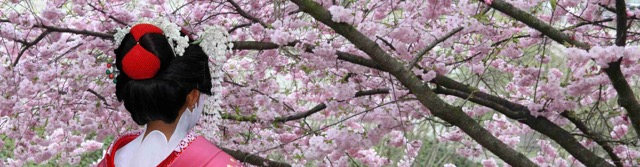
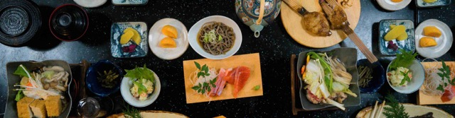
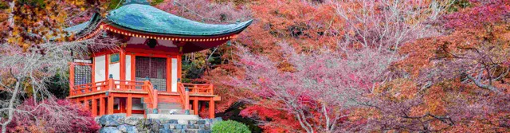

As soon as you set foot on the island of Japan, you become intrigued by its diverse cultural features.
Once you visit, you'll want to stay for more.
You don't know what's waiting, and that's powerful.
You never feel BROED in Japan.
| Month | Best For | Images |
|---|---|---|
| April | Cherry Blossom |  |
| October | Food |  |
| November | Landscape |  |
It's probably no surprise that Japanese cuisine (Washoku, 和食) is a gastronomical experience attracting people with curiosity and fascination. Speaking for myself, I could probably live in Japan for the rest of my life because there's so much delicious food to eat.
It's not only about Sushi but also many other traditional dishes that you can try. Sukiyaki (すき焼き) and Shabu Shabu (しゃぶしゃぶ) with lots of fresh vegetables, for example, are dishes that I appreciate.
Visiting a hot spring (Onsen, 温泉) in Japan is one of my absolute favorite things to do. The best thing about them is that they exist in almost every region. In many cities, a Sentō (銭湯) is preferred instead of Onsens.
A Sentō is more like a public bathing facility where the water comes from heated tap water rather than natural undergrown sources like Onsens. Wether I visit an Onsen alone, with family, or with friends, it will always be a few hours of rejuvenation.